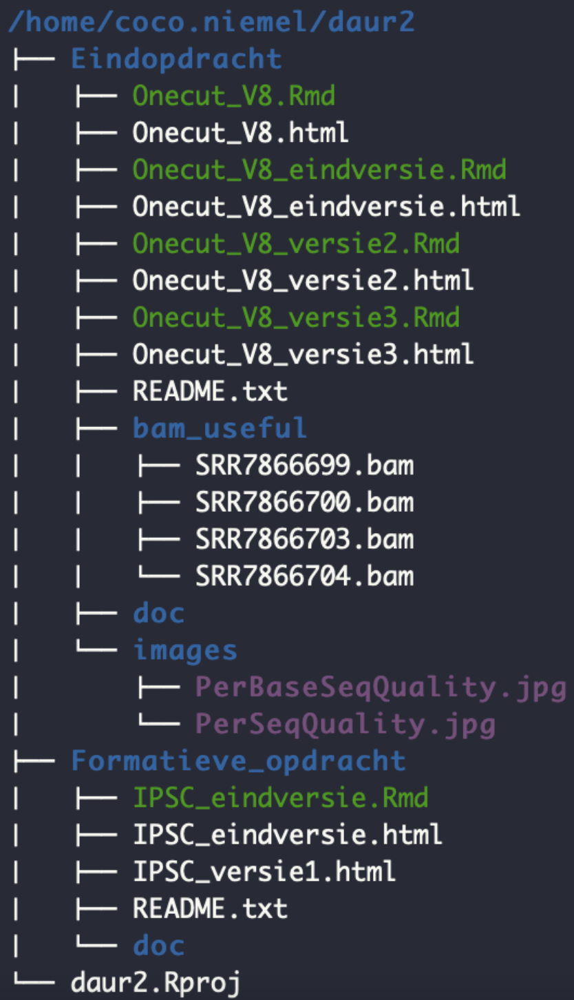

2 Data management
Introduction
I learned to use the Guerrilla analytics framework to manage my data in a clear way. The Guerrilla analytics framework consists of seven principles, which I will shortly introduce (Gestel, n.d.).
- Space is cheap, confusion is expensive. Saying that storage costs are low. Always keep your files, store them in a reliable online cloud and protect yourself from cyber criminals.
- Use simple, visual project structures and conventions. Organize files and folders in a system that makes it understandable for other team members. A couple of things to think of is to avoid deep nesting in folders, create a separate folder for each project and use subfolders for different datasets. Also try not to change names or move them, this makes it harder to lose.
- Automate with program code. This makes reproducibility possible.
- Link stored data to data in the analytics environment to data in work products. When storing data on different platforms, make shure to link those platforms before anything gets lost.
- Version control changes to data and analytics code. I used Gihub for version control, to secure all changes and data.
- Consolidate team knowledge. When working together, make shure to have a good communication line.
- Use code that runs from start to finish. This also makes it easier to reproduce or revisit later on.
My execution
An example of applying the Guerrilla analytics framework is linked below. This shows a project of a previous course I followed (DAUR2).

Figure 2: Folder tree following Guerrilla analytics framework.